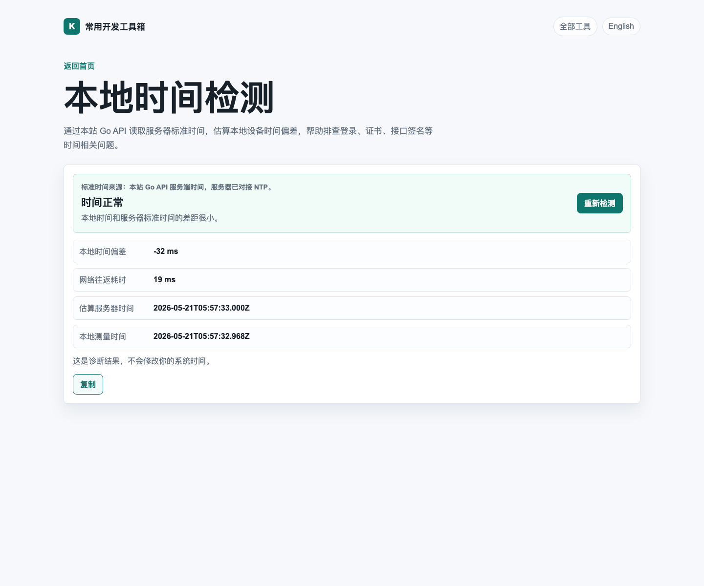
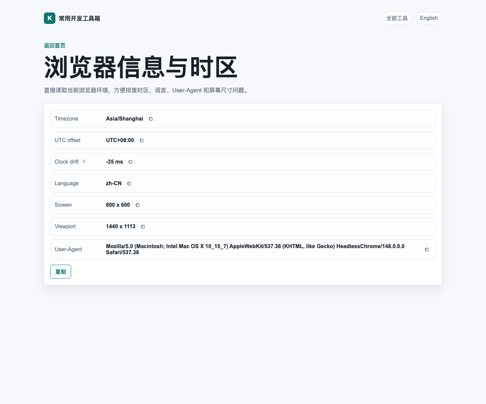

前段时间我一直有个很朴素的念头：平时排查问题时，总会反复打开一堆“小而碎”的在线工具。查一下出口 IP，转一下时间戳，看一下浏览器时区，顺手再格式化一段 JSON。每个需求都不大，但凑在一起，就很像在浏览器里打零工。
于是这次我换了个思路：不如直接用 Codex 来一把 vibe coding，把这些高频小工具收拢成一个自己看着顺眼、用起来顺手的小站。
它现在就在这里：
先放一张首页截图：

这个站目前不追求“大而全”，更像一个我自己会长期开着用的工具抽屉。思路很简单：
- 常用的小工具尽量放在一个页面里，少跳转，少找书签。
- 能在浏览器本地完成的事情，就尽量本地完成。
- 少一点花里胡哨，多一点“打开就能用”。
现在已经放进去的工具，基本都是平时开发和排查时最容易顺手掏出来的那些，比如：
- 客户端 IP
- IP 与掩码检查
- Base64 转换
- JSON Pretty
- URL 编解码
- 时间戳转换
- 本地时间检测
- 浏览器信息与时区
- UUID 生成器
其中有几个我自己还挺喜欢。
先说“本地时间检测”。这个工具是拿浏览器当前时间去和服务端标准时间做对比，适合排查一些看起来莫名其妙、实际上和时间有关的问题，比如登录异常、接口签名失效、证书时间不对之类。

这种工具的乐趣就在于：平时你未必天天用，但真碰上问题的时候，它能帮你少绕两圈。
另一个我挺常用的是“浏览器信息与时区”。有时候用户反馈“我这里时间不对”“页面显示怪怪的”“怎么跟你那边不一样”，很多时候先看一下浏览器时区、语言、UA、屏幕尺寸，心里就会有底。

而且这块我顺手把 Clock drift 也塞进去了。也就是说，不只是看浏览器报了什么，还能顺便看一下它和服务端参考时间差了多少毫秒。这个细节很小，但排查起来挺省心。
这次用 Codex 来做，体验也挺有意思。和传统那种“先列个很完整的需求文档，再慢慢开工”的方式相比，vibe coding 更像是：
- 先把想法说清楚；
- 再让 Codex 一边写，一边改，一边对齐细节；
- 不满意就继续调，直到页面、交互和功能都顺眼为止。
整个过程有点像和一个不会喊累的搭子结对编程。你负责提出“这个地方应该再顺一点”“这里应该更直观”，它负责快速把想法变成能跑的东西。节奏对了以后，推进速度确实很舒服。
当然，这个站现在也还远没到“完成体”。我更愿意把它当成一个会持续长大的小工具箱：谁知道后面还会不会继续往里面塞一些更奇怪但又真的有用的小玩意。
如果你也刚好经常要查这些东西，可以直接收藏一下：
至少以后想查个 IP、转个时间戳、看下本地时间是不是飘了，不用再满世界翻页面了。